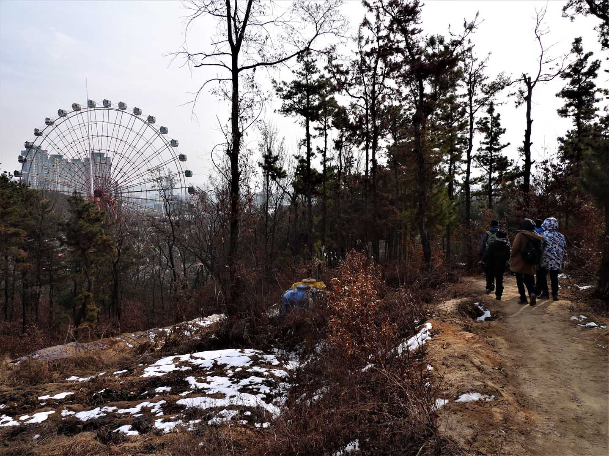
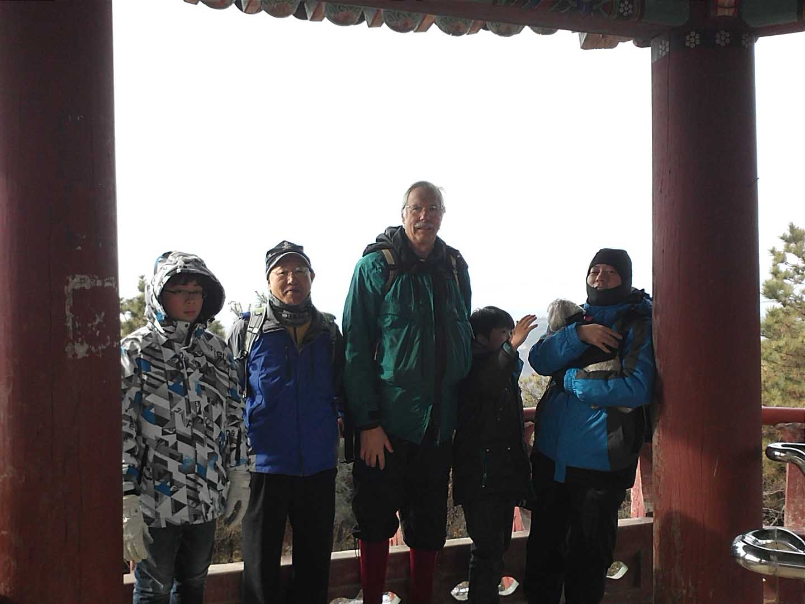

OuSeongEeSan (우성이산) (January 15, 2012)
We met at KAIST at 10:00 and drove to the mountain arriving around 10:30. We drove up the road adjacent
to Expo Park and turned right just past the Hyundae Dealer and adjacent to the road of the DaeWoo Car
dealer and parked on the right side of this road. The trail starts up to the left off the main road and
there is a sign with a map of the trails that marks the entrance to the hiking area. Up the trail from
the entrance sign is a shrine and memorial for the Min family ancestors. The area is a location of many
trails behind Expo Park and the research centers of the Daedeok (대덕) Valley. We hiked along these trails
and had lunch at 12:00. These trails are within city limits so very accessible for city dwellers to get
to by public transportation.
Ferris wheel in sight

After lunch we explored the area trails and finally turned around to retrace our steps leading behind
Expo Park. We then walked down to the park and walked along the road turning right at the bridge across
the Gapcheon (갑천) River and up the road to where the cars were parked. The Ferris wheel in the picture
is inside of Kumdoori land, an amusement park that was at the time next to Expo Park. As this hike was
some years ago if you were to do this hike today you would no longer see the same view as both Kumdoori
land park and Expo park have been torn away and replaced by movie studios and other developments. In
Korea the only thing constant is change. At least despite the development and new construction the
hiking trails remain for the city residents to enjoy as you will find many city dwellers having a
morning or evening jog.
Group photo

This was an quite easy hike with few steep trails and lots of level trails with city views. There were
many views of the many research centers located in this area of the city and associated apartment
complexes including the Expo Apartments that are adjacent to the Gapcheon (갑천) river leading up to the
Geumgang (금강) River. Again, if you were to compare the view of then and today you would be amazed at all
the new construction and apartment complexes. Here is our group photo for this hike. It was a small
group this day perhaps because of the frigid winter temperatures. As usual, Jong Moo is very considerate
to help out by carrying my dog “Bibi” who doesn’t seem to mind the cold at all and enjoys the attention.